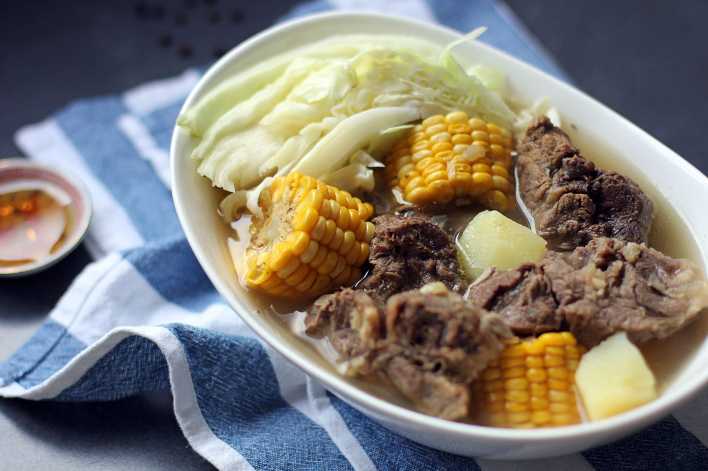

Odin Recipes
Bulalo
Beef Shank Stew

Bulalo is one of the many broth soups in Filipino cuisine. It is similar to another dish, Nilaga, in preparation except in specifically uses beef shanks and beef marrow.
What you will need:
- Bone-in beef shanks and beef bone marrow
- Onions
- Green Onions
- Pechay/Bok Choy
- Corn on the cob
- Cabbages
- Potatoes
- Carrots
- Baguio beans/String beans/French beans
- Salt
- Peppercorns
- Fish sauce
- Chef's knife and cutting board
- A large cooking pot
How to make it:/h4>
- Submerge the beef shanks in a large pot of water and bring it to a boil
- Drain the pot and rinse the beef in cold water. Discard the the liquid and rinse the pot.
- Repeat step 1, skimming off the scum that accumulates at the top.
- When the broth has cleared, add onions,fish sauce and peppercorns to taste.
- Lower the heat, cover with lid, and cook at a bare simmer for about 1-2 hours or until meat is tender enough to pierce with a fork but not falling apart
- Chop corn and potatoes then add to the broth.Let it simmer for 10 to 15 mins or until the corn is tender
- Chop the remaining vegetables into bite sized pieces and add them into the pot. Let it cook for about 2-3 minutes
- Season with salt or fish sauce to taste.
- Enjoy it hot on rice with a dipping sauce made with fish sauce, chopped thai chili peppers and calamansi juice.